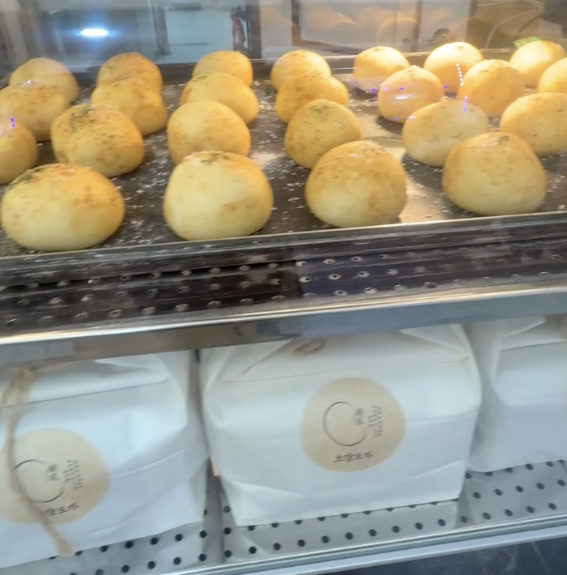
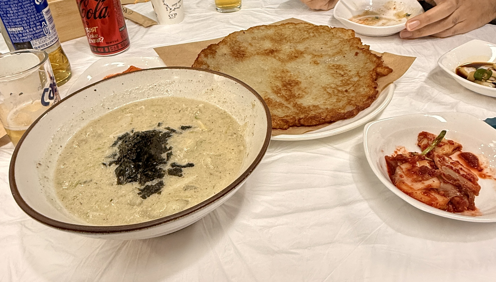
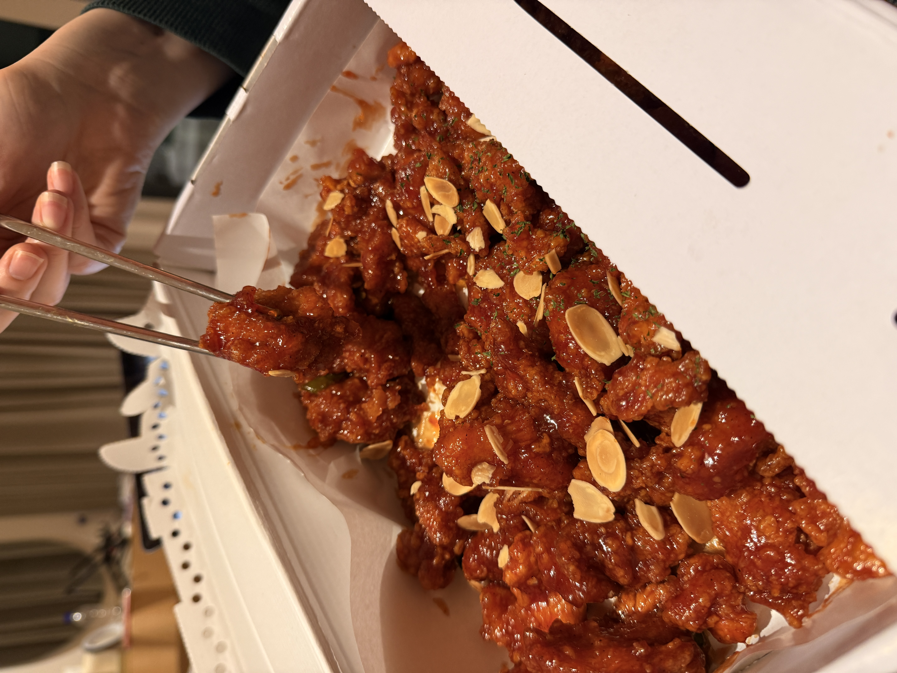
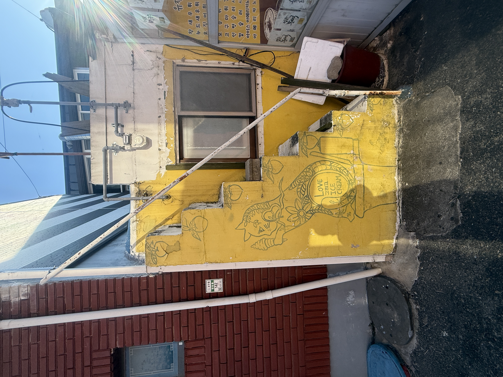
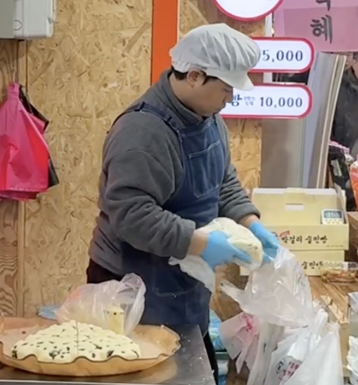

At a Glance
WhereSokcho Tourist Market + Abai Village
Best ForStreet food and regional specialties
Must TryDak gangjeong, Abai sundae, potato dishes
Timing TipGo before peak sellout times
Sokcho's famous sweet-and-sour fried chicken draws long lines for good reason. It is lightly spicy, glazed, and topped with peanuts. Popular stalls can sell out early.
Mansuk is the most talked-about vendor. The chicken comes in a large white takeaway box, but it works well as beach lunch or shared leftovers. Even cold, it stayed tasty.

Near the market, Abai Village has roots in North Korean refugee history and is packed with restaurants and small shops. The signature dish is Abai sundae.
Unlike standard sundae made with intestines, this style fills squid with noodles, tofu, pork, and other ingredients. Many places also serve Hamheung naengmyeon and related North Korean specialties.

The market's giant steamed Sulppang bread is easy to spot thanks to long queues. It uses makgeolli as the starter, creating a chewy texture and a sweet yeasty aroma.
Watching the huge mold turned out and sliced fresh in front of waiting customers is part of the experience.

Potatoes are a Gangwon signature, so Gamja Ongshimi is a must-try. The soup is filled with soft, chewy potato dumplings and can be served in different broth styles.
At Sinto Buri Ongsimi near the market entrance, the perilla-seed version and giant potato pancake were both excellent. Arriving closer to closing time helped avoid the long line.

The market is full of snack stalls selling dried seafood, chili paste, drinks, and local sweets. Two fun stops were a potato-ball shop and Ten Percent Coffee outside the market.
If you have the time, this is the kind of area where you can happily spend hours tasting your way through different stalls.

Tap a stop to preview it on the map, then open Google Maps for directions.